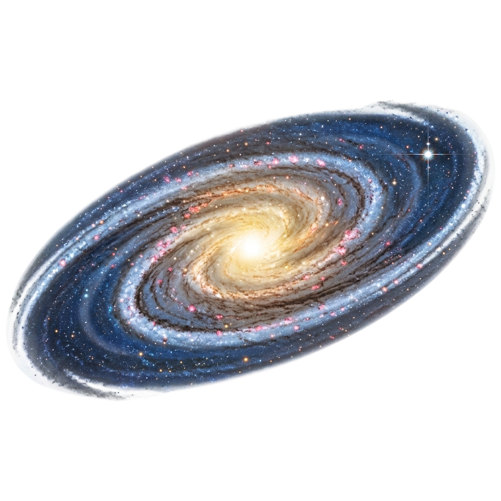
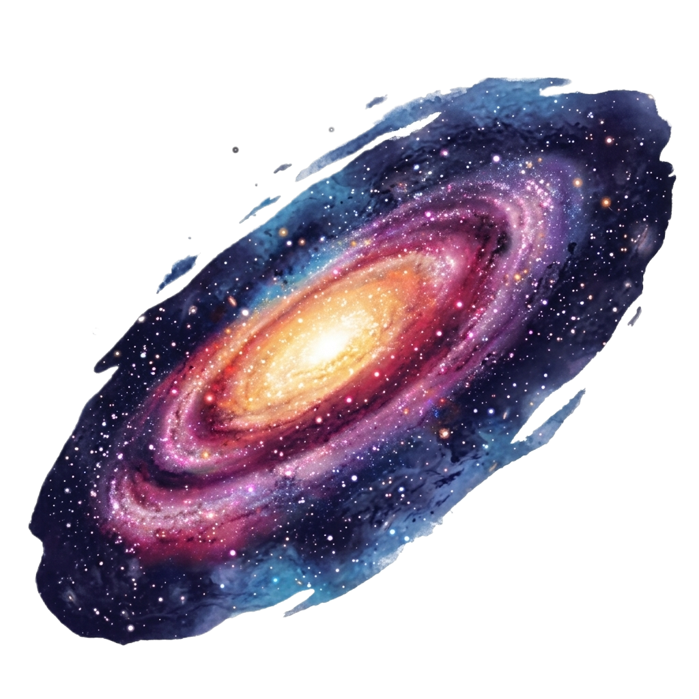
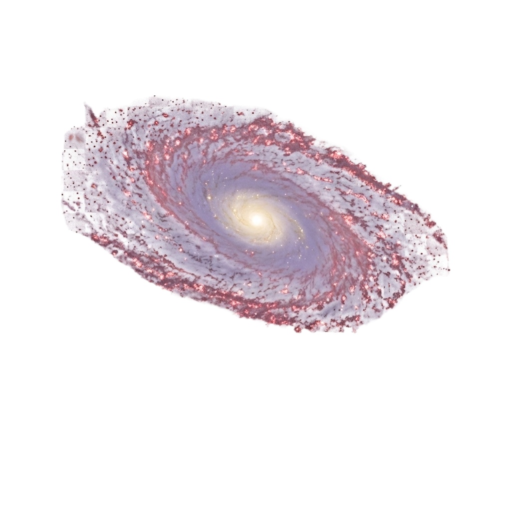

Найближча до Чумацького Шляху велика спіральна галактика. Вона містить близько трильйона зірок і наближається до нас зі швидкістю 110 км/с. Приблизно через 4.5 мільярда років наші галактики зіткнуться, утворивши одну гігантську еліптичную систему.
Дізнатися більше
Унікальна спіральна галактика в сузір'ї Діви. Свою назву вона отримала через характерний зовнішній вигляд, що нагадує широкополий мексиканський капелюх. Вона має незвично велике і яскраве центральное ядро і чітко окреслене темне кільце з космічного пилу.
Дізнатися більшеСучасна астрономія приділяє Андромеді особливу увагу. Вона розташована на відстані близько 2.5 мільйонів світлових років від нас, що за космічними мірками є зовсім поруч. Головна сенсація полягає в тому, що Чумацький Шлях та Андромеда летять назустріч один одному під дією взаємного гравітаційного тяжіння. Швидкість цього зближення просто колосальна — близько 110 кілометрів на секунду!
Учені за допомогою комп'ютерного моделювання з'ясували, що приблизно через 4-5 мільярдів років відбудеться грандіозне зіткнення. Проте зірки всередині галактик не будуть врізатися одна в одну, адже відстані між ними занадто великі. Гравітація просто перемішає газові хмари, викликавши шалений спалах народження нових зірок, а самі структури об'єднаються в гігантську еліптичну галактику "Млекомеда".
Галактика Сомбреро розташована у сузір'ї Діви на відстані приблизно 28 мільйонів світлових років від Землі. Її маса еквівалентна 800 мільярдам сонць. Коли астрономи досліджували її ядро за допомогою космічного телескопа Хаббл, вони виявили щось неймовірне: у самому центрі Сомбреро знаходиться супермасивна чорна діра, маса якої перевищує масу нашого Сонця в 1 мільярд разів!
Сомбреро має надзвичайно багату систему кулястих зоряних скупчень — їх там налічується понад 2000 (у нашому Чумацькому Шляху лише близько 150). Її знамените темне кільце з пилу не просто красиве — воно поглинає світло зірок, що знаходяться за ним, створюючи той самий знаменитий контрастний силует "крисів капелюха", який зачаровує людей уже понад дві сотні років.